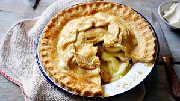

"Odin Recipes"
Apple pie

winter apple pie
Traditional apple pie, for those cold winter month's.
A quick and easy recipe, suitable even for novices.
Ingredients
- 3 large cooking aples
- 350g plain white flour
- 225g butter
- 50g sugar
- 2 eggs
- cream to serve
Steps
- sieve floor and sugar into a large mixing bowl
- cut butter into small cubes,add to flour and rub in with fingers
- add eggs to form a pastry, place pastry in the fridge
- peal and core apples, slice into half cm pieses
- remove pastry from the frdge, roll out so the is enough to cover your dish twice
- use your dish to messure the pastry add an extra 2cm to each piece
- place pasty on the dish, followed by apples
- place second piece of pastry on top
- brush with milk and add holes with a fork to let steam escape
- bake for 40-45 mins at 190C